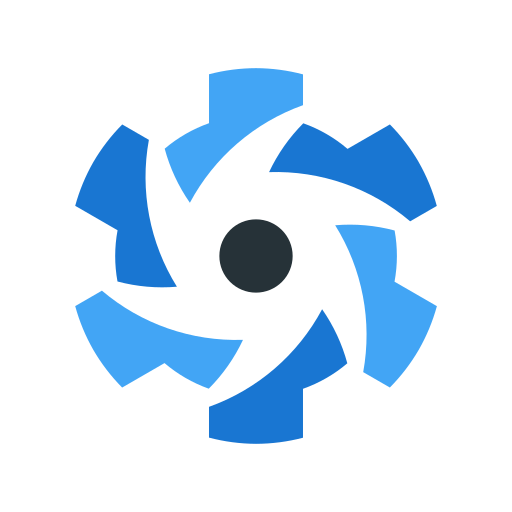
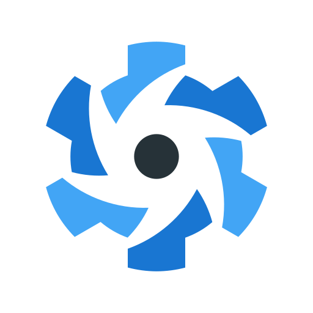

¿Quien soy?

Empecé descifrando a Platón y Aristóteles, y acabé descifrando bugs. Después de pasar por sectores tan variados como difíciles de explicar, descubrí que la programación es ese lugar donde la lógica se encuentra con la creatividad y donde cada problema es un acertijo que puedo resolver con JavaScript, Vue, React y Node.js. Me encanta crear soluciones web que no solo funcionan, sino que sorprenden al usuario, y busco proyectos desafiantes donde pueda aplicar mis habilidades fullstack y seguir aprendiendo.
Mis habilidades


 



Mis proyectos